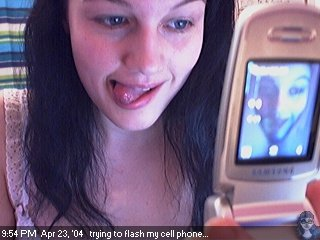

Perpetua(l)
Stephanie Pakrul / 2016
About the exhibit
Perpetua(l) came about during the closing days of the iconic webcam portal CamWhores.com. While reviewing 17,000 photos that comprised my image archive, 200 or so cell phone cam photos stood out as snapshots of mobile history.
To the best of my knowledge, in 2004 no one had yet implemented the process of taking a photo with a mobile phone and sending it to a webcam or gallery within a social network, over a cellular data connection. The first "camera phone" had been released only a year or so prior.
As these camera phones gained traction, I saw an opportunity to untether myself from the webcam cord. I picked up a flip phone to carry along with my Windows Mobile phone. Crucially, it had a good camera for the time.
{kind=link}
Browsing through hundreds of snapshots, one particular photo leapt out at me. receipt.jpg. I knew that shot. I had Instagrammed one with the same subject and composition months ago. I pulled them up side by side. Ten years apart, they were different but the visual communication is strikingly similar.
Curated here are pairings of photos to illustrate commonalities and to highlight where we have changed (e.g. the invention of the hashtag) in mobile photography over the past decade.
About the artist
As 'StephTheGeek' since 2000 when I was assigned the moniker by my high school classmates, I have witnessed the art & play of the webcam evolve from intermittent 320x240px images to a diverse empire of HD streaming video websites——both tame & titilating. While it was perhaps difficult to predict at the time that selfies would become such a defining aspect of internet culture, I was no stranger to the marketing appeal, and first created a public webcam in order to raise funds to record my album (released in 2003).
My graduate studies at UC Berkeley were motivated by a drive to comprehend the world of radical personal transparency I had thrown myself into. During the mid-2000s, I broadcast myself on 24/7 webcams, published a live stream of my web browsing activity, and dabbled in pre-Foursquare era location sharing.
In exploring a lifestreamed, quantified view of the digital self, I unapologetically blend art & raw artist. Sexuality, science, collective consciousness, mental health, and unabashed positivity mixed with dark humor permeate my eclectic world.
The medium is the message——and so is the journey. I am a strong proponent of "showing your work" along the way of this messy expedition that is being human!

This work is licensed under a Creative Commons Attribution 4.0 International License.